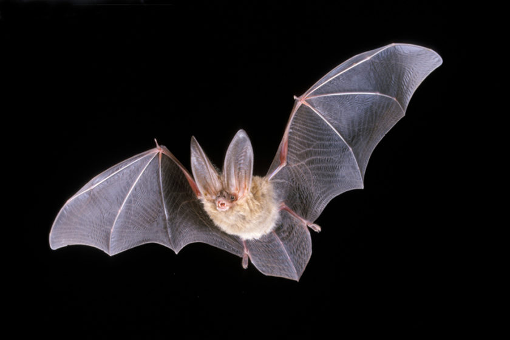

If you find a grounded or injured bat, do not handle it with bare hands. Use gloves or a towel to place it in a secure, ventilated cardboard box, and contact a local wildlife rehabilitator or bat interest group immediately